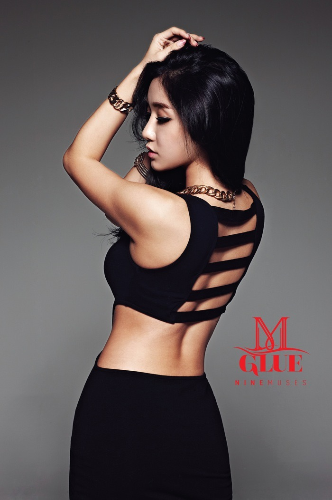

|  | |
|---|---|
| 본명 | 류세라(柳世羅) |
| 활동명 | 세라 |
| 출생 | 1987.10.3 부산광역시 부산진구(만31세) |
| 국적 | 대한민국 |
| 신체 및 혈액형 | 169cm, A형 |
| 소속 그룹 | 없음(前 나인뮤지스 멤버) |
| 소속사 | OCTO(1인 기획사) |
| 데뷔일 | 2010년 8월 12일 싱글 1집 'Let's Have A Party |
| 별명 | 세라비 |
| 가족 | 부모님, 남동생 류지웅 |
| 학력 | 개원초등학교 화명중학교 New Westminster Secondary School 한동대학교 영문학 |
나인뮤지스의 前 원년멤버 | |